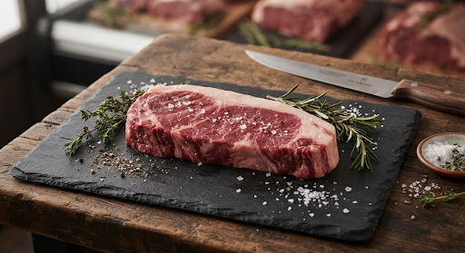

Res
Bife de Chorizo
Corte jugoso con veta perimetral de grasa que aporta un sabor inigualable al fuego y a la plancha.
tune
Porción o pieza entera a consultar
chat
Consultar por WhatsApp
Confirmación directa con el carnicero